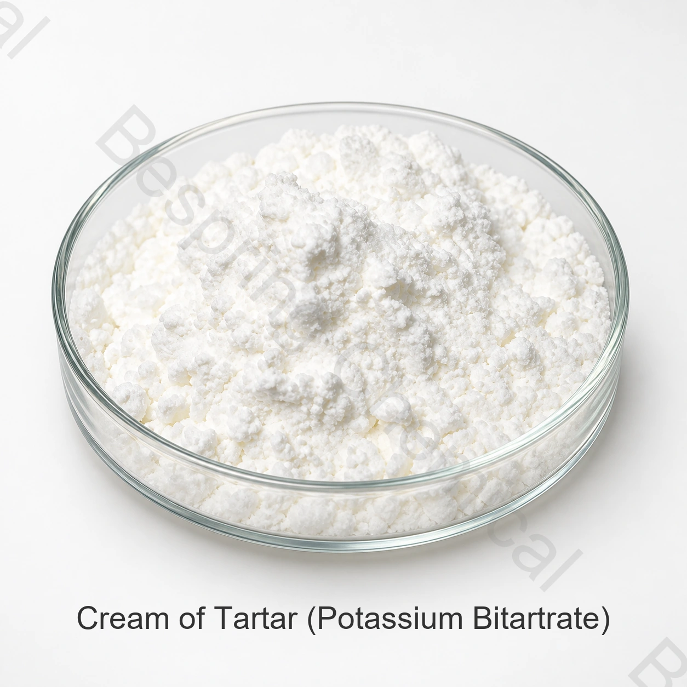

Grade and particle size
State particle size, application, standard, quantity, packing and destination.
Food grade ingredient · Acid salt and leavening ingredient · COT
Cream of tartar is potassium hydrogen tartrate, also called potassium bitartrate. It is an acidic potassium salt used in suitable bakery, confectionery and culinary systems for leavening reactions, pH adjustment and formulation support.

Product image · confirm grade and packaging when ordering
Share the exact grade, application, quantity, packing, destination and required documents.
GradeFood grade, subject to exact-source qualification
SpecificationCurrent document available from sales
PackingConfirmed in the source-specific offer
Batch evidenceCurrent COA available for supplied lots
Product overview
Cream of tartar is potassium hydrogen tartrate, also called potassium bitartrate. It is an acidic potassium salt used in suitable bakery, confectionery and culinary systems for leavening reactions, pH adjustment and formulation support.
Commercial suitability depends on the exact source, intended function, full food process and destination-market rules. Agree the grade-specific specification for your order and use the batch COA for acceptance.
Procurement checklist
Compare the offered grade, application requirements and commercial terms before requesting a sample or placing an order.
State particle size, application, standard, quantity, packing and destination.
Request CAS 868-14-4 identity, current specification, COA and origin documentation.
Provide the bicarbonate system, target reaction, process and finished-product tests.
Verify permitted use and label declaration in the destination market.
Application screening
Select applications permitted in the destination market and evaluate performance in the finished food.
Screen as an acid component with bicarbonate after reaction and performance trials.
Evaluate pH, crystallization behavior, taste and process compatibility.
Test foam stability in the actual recipe; performance depends on the complete formulation.
Confirm particle distribution, flow, segregation and moisture protection.
Technical selection
Align cream of tartar, potassium bitartrate and potassium hydrogen tartrate naming in documents.
Choose granulation for dispersion, dust control and blend uniformity.
Balance acid and bicarbonate on a tested formulation basis.
If wine-process origin or other sourcing claims matter, request traceable declarations.
Technical documents
Bespring Chemical does not publish product specifications for this ingredient online. Contact the sales team for the current source-specific specification or TDS and confirm that its revision, test methods and acceptance criteria match your purchase requirements.
Request the current signed specification or TDS, SDS, analytical methods, representative COA and batch COA.
Verify applicable food-safety, quality, origin, allergen, Kosher, Halal and site certificates for the exact grade and source.
Review the FAO/WHO JECFA food-additive specifications database, then apply current destination-market rules to the exact finished food.
Compliance note: International identity references do not by themselves authorize every application. The buyer is responsible for confirming the food category, use level, label declaration and other requirements in each destination market.
Storage and handling
Buyer questions
Cream of tartar is potassium hydrogen tartrate, also called potassium bitartrate. It is an acidic potassium salt used in suitable bakery, confectionery and culinary systems for leavening reactions, pH adjustment and formulation support. The current signed specification for the selected source governs supply.
CAS 868-14-4; INS 336(i); KC4H5O6. Where the name covers a family or mixture, confirm the exact member and composition before approval.
For the offered grade, request the current specification or TDS, relevant test methods and available COA documentation. Confirm the agreed quality requirements before ordering.
Ask for the current specification or TDS, SDS, representative COA, batch COA and relevant food-safety, origin, allergen, Kosher, Halal or other certificates for the exact source.
Provide the exact grade or type, application, critical performance needs, quantity, packing, destination market, required documents, Incoterm and requested delivery date.
Related sourcing
Browse the full portfolio and available technical product dossiers.
Discuss the product specification, documents, sample and commercial requirements.
Review sourcing and export support for international ingredient procurement.
Specification-led sourcing
Share the exact grade or type, application, critical performance requirements, quantity, packing, destination and document list for a relevant proposal.
Tell us your grade and destination market so we can confirm which documents are available for your order.
An external reference is not a batch certificate or a Bespring product specification.